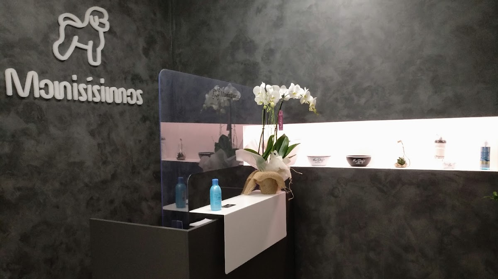
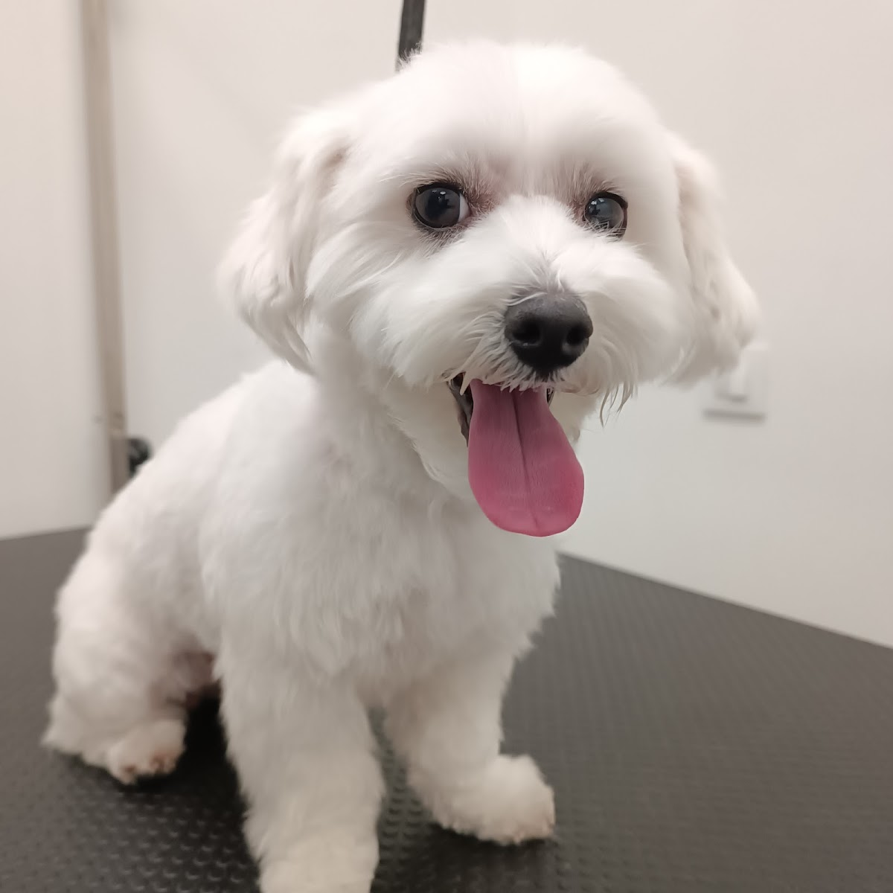
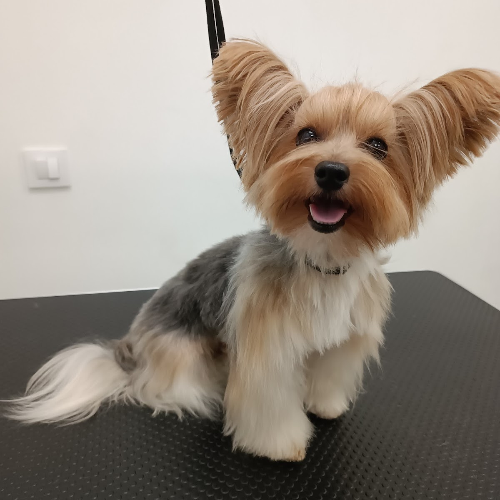
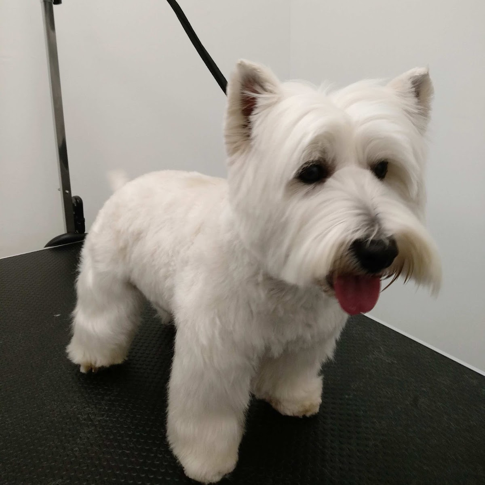
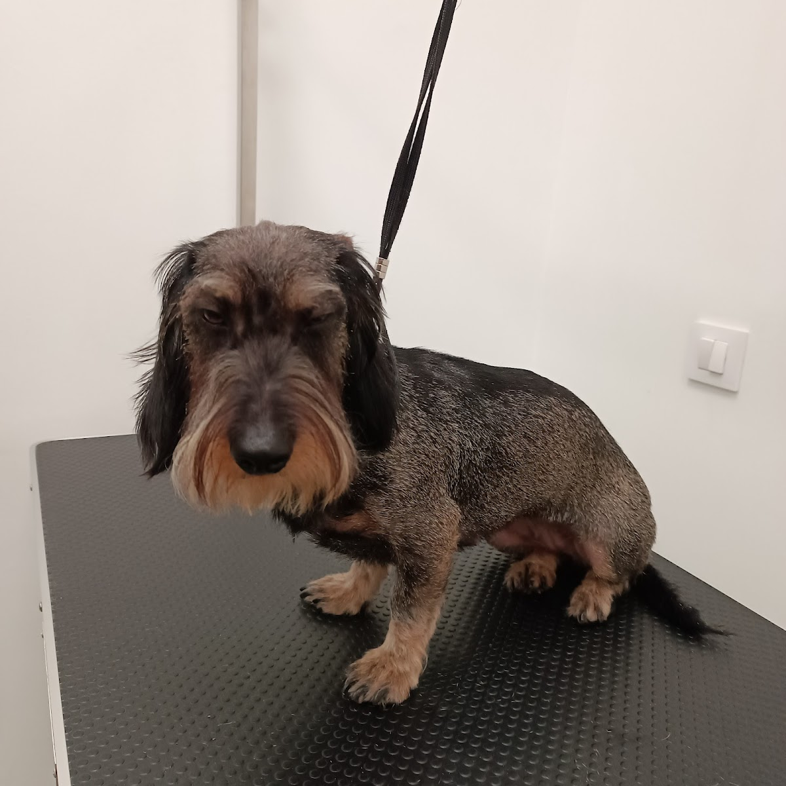
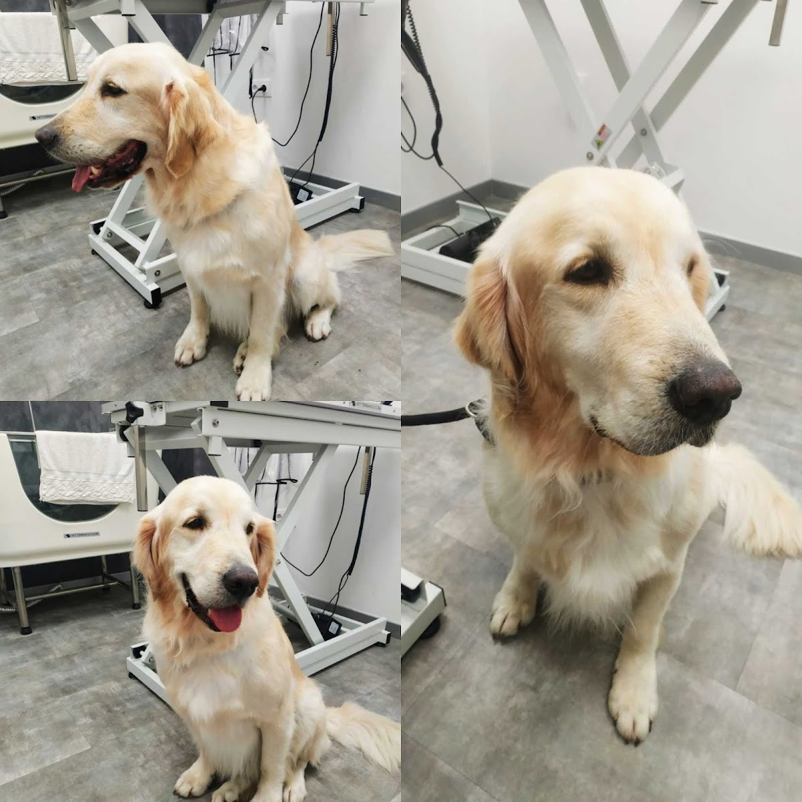
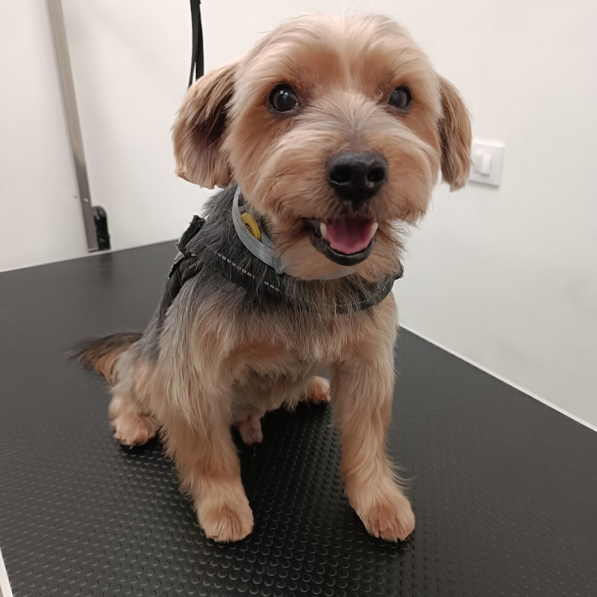
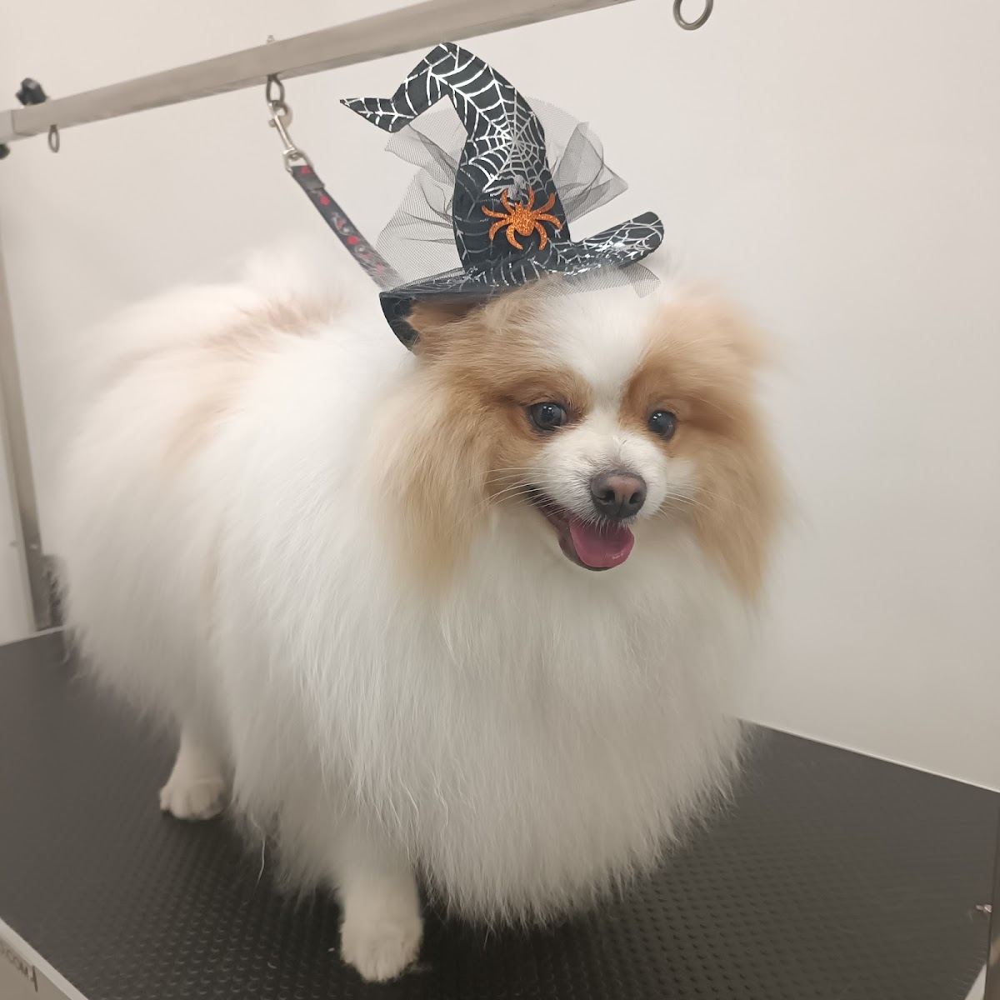

Un baño no es solo un baño. Es ese ratito en que alguien trata a tu mascota con la misma paciencia que tú. Belén y José se ocupan de cada detalle — y tú recibes a un peludo brillante, suave y tranquilo.




Detrás de Monisísimos hay dos personas que entienden algo simple: tu mascota no es un cliente más, es de la familia. Por eso, desde que entráis por la puerta, se respira el cariño con el que tratamos a cada peludo.
Nos preocupamos por cada detalle: el pelo sin un solo enredo, la piel cuidada, ese brillo que se nota al tacto. Trabajamos despacio y con mimo para que tu mascota esté tranquila y tú la recojas guapísima y feliz.
— Belén & José, Monisísimos
Sin prisas ni sustos. Nos adaptamos al carácter de tu mascota para que la experiencia sea un placer, no un mal trago.
Baño con productos suaves, secado e hidratación. Tu mascota sale con el pelo limpio, suave y con ese brillo que se nota nada más tocarlo.
Corte a tijera o máquina según la raza y tus gustos. Cuidamos cada detalle — orejas, patas, carita — para que vuelva a casa hecha un primor.
Sí, también cuidamos felinos. Desenredamos, cepillamos y dejamos su pelo suave y sin nudos, con la calma que un gato necesita.
No es solo el resultado. Es cómo se siente tu peludo mientras lo cuidamos.
Desde que entráis se siente. Tratamos a cada animal con un amor que, como dicen nuestros clientes, es incondicional.
71 familias han dejado su reseña. La nota la ponen ellas — nosotros solo cuidamos a su peludo como si fuera nuestro.
Orejas, uñas, enredos, brillo del pelo. No hay nada que se nos pase: el resultado se nota al verla y al tocarla.
Lo importante es que tu peludo salga tranquilo y tú tranquila. Conseguimos que los dos os vayáis a gusto.




Fotos reales de mascotas reales — todas recién salidas del spa. 🐾
"Llevé a mi bebé Loki y quedó hermoso. Belén y José, gracias, porque desde que entramos se sintió el amor que tienen hacia los animales. Una peluquería de excelencia en Valencia, recomiendo 100%."
"Llevé a mi perrita Yorkie, el trato de José y Belén es excepcional, se preocupan por cada detalle. Mi niña salió súper guapa y con un brillo en el pelo. Volveré a llevar a Frida sin lugar a duda."
"Encantada con el trato, excelente servicio. Mi gato tiene ahora el pelo suave y sin enredos, se nota que se esfuerzan por hacer un trabajo impecable. Recomendable 100%."
"Una peluquería canina de las mejores. Cada vez que estamos por Valencia, mi peludo queda en las mejores manos y súper guapo. Gracias al equipo de Monisísimos por dejar siempre muy lindo a Pablito."
"El sitio me ha encantado, mi peludita fue a su primer baño y salió bella y feliz, el trato genial. Allí nos quedamos, fue la mejor decisión."
Nota media de
71 reseñas en Google
Cuéntanos cómo es tu mascota y qué necesita. Te decimos hueco y precio el mismo día — sin formularios eternos, directo por WhatsApp.
Pedir cita ahoraUn mensaje de WhatsApp y listo. Nos cuentas cómo es tu mascota y qué necesita, y te confirmamos hueco y precio el mismo día. Nada de formularios largos. 💬
Sí. Cuidamos perros y gatos. Con los felinos vamos con calma: desenredamos, cepillamos y dejamos su pelo suave y sin nudos, respetando su ritmo.
Sin problema. Trabajamos despacio y con mucho mimo precisamente para eso. Muchas familias nos traen a su peludo a su primer baño — y sale feliz. Cuéntanoslo por WhatsApp y lo preparamos.
En el barrio de Extramurs, Valencia — junto a la Plaza Obispo Amigó, en la calle Historiador Diago, 30 (bajo derecha). Si tienes dudas para llegar, escríbenos y te orientamos.
Baño con productos suaves, secado, hidratación y cuidado del pelo para que salga limpio, brillante y sin enredos. Lo adaptamos a la raza y al tipo de pelo de tu mascota.
Escríbenos por WhatsApp y cuéntanos de tu mascota. Te responden Belén y José, normalmente en el día. ☕